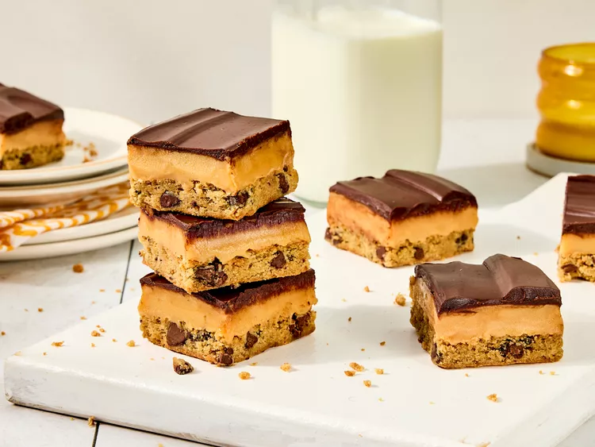

Millionaire Bars Recipe
Home

Description
You’ve probably heard of classic Millionaire Bars, but our Chocolate Chip Cookie Millionaire Bars take them to a whole new level. Instead of the traditional crisp shortbread base, we use a chewy, buttery chocolate chip cookie dough for a comforting, familiar texture (and a super easy shortcut!).
Ingredients
- Baking spray with flour
- 2 packages refrigerated break-and-bake chocolate chip cookie dough
- 2 cans sweetened condensed milk
- 1/2 cup packed light brown sugar
- 1/2 cup light corn syrup
- 1 teaspoon table salt
- 10 tablespoons unsalted butter, cut into 1 tablespoon parts, divided
- 1 teaspoon vanilla extract
- 2 bars semisweet chocolate, finely chopped
- 1/4 cup heavy whipping cream
Steps
- Gather all ingredients. Preheat oven to 350 degrees F.
- Spray a 13x9-inch baking pan with baking spray; line bottom and sides with parchment paper, leaving a 1-2 inch overhang on long sides.
- Break apart dough squares along perforations and evenly scatter in bottom of the prepared pan. Let stand at room temperature until softened, 5-10 minutes. Using a sheet of plastic wrap placed directly on surface, press doigh into an even layer in the bottom of the pan. Remove and discard plastic wrap.
- Bake in the preheated oven until golden brown and a toothpick comes out clean when insterted in center, 25-30 minutes. Let cool in pan on a wire rack while making filling.
- Add condensed milk, brown sugar, corn syrup, salt, and 1 cup of the butter to a large saucepan; cook over medium, whisking constantly, until butter is melted and mixture starts to bubble, about 10 minutes.
- Continue to cook, whisking constantly, over medium until mixture is a caramel color, thickened, and about 235 degrees F, about 10 minutes. Remove from heat and stir in vanilla until combined.
- Working quickly, pour caramel over cookie layer, spreading into an even layer with a small offset spatula. Chill in refrigerator, uncovered, until set, about 1 hour.
- Add Chocolate, cream, and remaining 2 tablespoons butter to a medium, heatproof bowl; place bowl over a saucepan filled with 1 inch of simmering water, making sure bottom of bowl does not touch water. Cook, stirring constantly, until chocolate mixture is melted and smooth, 2-3 minutes.
- Working quickly, pour, and spread chocolate mixture evenly over caramel layer, chill in refrigerator, uncovered, until set, about 1 hour.
- Using parchment paper as handles, remove from pan and place on a cutting board. Using a warm, dry, sharp knife, cut into bars. Serve immediately or store in an airtight container at room temperature for 3-5 days.